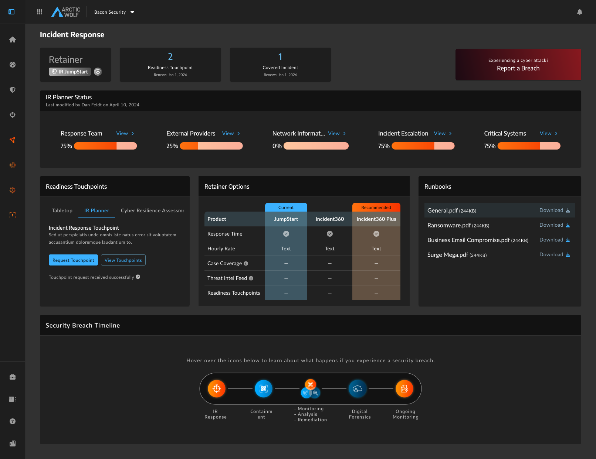

A new product tier with no interface to support it
Arctic Wolf launched the Incident360 Retainer, a new tiered IR subscription (JumpStart, Incident360, Incident360 Plus) designed to expand market reach and shift the business toward scalable, self-serve delivery. The retainer exceeded 200% of first-year sales projections and generated $9M ARR within 12 months, earning recognition in an IDC Market Note as a category-defining product.
But the product had a critical gap: there was no customer-facing interface to support it. Customers who purchased a retainer had no way to see what they'd bought, track unused entitlements, or request readiness activities without going through their CSM or IR team directly. Without a dashboard, every touchpoint request and every "how many sessions do I have left?" question would route back to an already-stretched team, creating an operational bottleneck at the exact moment the business was scaling fast.

The dashboard wasn't a nice-to-have. It was the infrastructure that made the retainer viable at scale. We launched both simultaneously, by design, because launching the retainer without it would have been an operational nightmare.
Two failure modes: during a crisis, and before one
Before this dashboard, IR customers had no dedicated interface. Customers experiencing an active security incident were directed to a static web form or a phone number, in the middle of a high-stress, time-critical event where systems may already be compromised. There was no clear "I'm under attack right now" action. There was no way to know what Arctic Wolf would do next.
In the readiness phase, before an incident, the failure was quieter but equally damaging. Customers had no visibility into their purchased entitlements, no way to track which readiness activities they'd completed, and no prompt to use what they'd paid for. Left unaddressed, this would drive both churn and wasted retainer value.
Give customers immediate visibility into what they've purchased and a clear way to request help during a security crisis, without creating operational chaos for the IR team?

Bridging systems research with user needs
I was brought in after initial product scoping had begun, which meant there was no time for direct customer research. Rather than design in a vacuum, I front-loaded systems research to understand how backstage workflows actually functioned.
Shadowing
Shadowed Command Center leads to observe real-time incident handling and operational pressure points.
Stakeholder Interviews
Interviewed IR, Concierge, and Triage managers to map cross-functional dependencies.
I synthesized these findings into a cross-product ecosystem map, a comprehensive wireflow showing exactly how customer actions on the dashboard would trigger internal processes, which teams were involved, and where dependencies existed. In a 3-month sprint with an immovable sales kickoff deadline, this early mapping prevented late-stage surprises and gave every stakeholder (Product, Engineering, IR) a shared mental model before a single screen was designed.

This wasn't just process hygiene. The systems research directly shaped design decisions: understanding how the Concierge team tracked touchpoint notes, for example, told us exactly what post-session data we could surface to customers, and what we couldn't, because it wasn't structured data yet.
Balancing customer urgency with operational safety
Decision 1 — The breach button: maximum visibility, deliberate friction
The "Report a Breach" button needed to be unmissable during a chaotic, high-stress event. I positioned it top-right, aligned with standard mental models for global primary actions, and isolated it by keeping all other header widgets left-aligned. The deliberate visual asymmetry and high-contrast red against the dark theme ensured it couldn't be missed in a panic.
But clicking it triggers a costly Command Center response. A false alarm has real operational consequences. So I built friction into the next step rather than the button itself: clicking routes to an acknowledgment screen requiring explicit confirmation of an active incident, followed by a triage form. Customers get instant access when they need it; the backend is protected from accidental triggers. FullStory data later validated this: the breach button was the least-interacted element on the page, exactly the outcome we designed for.
Decision 2 — Readiness touchpoints: two-layer friction to protect backend operations
Requesting a readiness touchpoint initiates an intensive internal workflow. Early shadowing revealed a real risk: accidental or repeated clicks would flood internal systems with duplicate tickets. I designed a two-layer protection system: an acknowledgment modal forces deliberate confirmation before a ticket fires, and a 48-hour session block prevents duplicate requests while the initial ticket is being processed. Clear system feedback, replacing the button state with a success confirmation, closed the loop for the customer without requiring any follow-up.
This is a case where designing for the backstage operation was as important as designing for the customer; the two goals were inseparable.
Decision 3 — IR Planner status: using completion psychology to drive security behavior
Completing the IR Planner is one of the highest-value actions a customer can take; it directly reduces breach impact. But from a customer's perspective, it's documentation work that's easy to deprioritize. Rather than linking to a form, I broke the planner into visible categories (Response Team, Critical Systems, External Providers, Incident Escalation) each tied to a visual progress bar. A 0% bar or an orange incomplete bar creates natural urgency. It turns a security gap into an actionable dashboard metric. Post-launch FullStory data showed customers were significantly more likely to actively engage with and update their IR plans compared to the previous static link experience.
Decision 4 — Retainer options: transparency that earns the upsell
The retainer comparison widget serves two goals simultaneously. For customers, it provides immediate clarity on their contractual entitlements — eliminating the need to dig through PDFs or contact their account manager mid-incident. For the business, placing the current tier directly adjacent to the recommended tier visualizes exactly what protection the customer is missing. Leading with genuine utility earns the right to present the upsell. The widget avoids feeling like an advertisement because it answers a real question the customer already has.
Killing the pizza tracker
During ideation, there was strong appetite for a real-time incident status widget, essentially a "pizza tracker" for cyber attacks, showing customers exactly which stage their breach response was at as the internal team worked.
I killed this for two distinct reasons. First, the data architecture didn't support it: Arctic Wolf's systems were good at capturing automated events, but complex IR milestones (such as "root cause identified" and "threat remediated") were manually documented by security analysts working active cases. Building a live customer-facing UI on top of manual, unstructured data would have been unreliable and maintenance-heavy, requiring analysts to pause critical mitigation work for data entry.
Second, and more fundamentally, a pizza tracker is the wrong mental model for incident response. Pizza baking is linear and predictable. A cyber breach is chaotic and variable. A progress bar stalled at "Forensics" for 48 hours during a complex ransomware case wouldn't inform the customer; it would cause anxiety and erode trust in the product at exactly the moment they needed confidence. The right experience during an active incident is a clear point of contact and a reliable SLA, not a status bar that may not move.
Extending Fenrir, not hacking around it
Several dashboard components, including the retainer comparison table, had no existing pattern in Arctic Wolf's Fenrir design system. The expedient path would have been building one-off UI. Instead, I collaborated with the Design Systems Lead to properly architect and document new components that adhered to system standards. This took more time up front but ensured consistency across product areas and gave other teams reusable patterns for future work.
It was one of the harder constraints to manage under a 3-month deadline, but shipping something inconsistent that would need to be fixed later wasn't a real option for a customer-facing product at this scale.
A category-defining operational success
The Incident360 Retainer exceeded 200% of first-year sales projections and generated $9M ARR within 12 months — recognized in an IDC Market Note as a category-defining product. The dashboard was the operational infrastructure that made that growth viable: without it, every entitlement question, touchpoint request, and incident initiation would have required manual handling by an already-constrained IR team.
The $9M ARR reflects the success of the Incident360 Retainer as a business, of which the dashboard was the enabling infrastructure. Without a self-serve interface, every entitlement question and touchpoint request would have required manual CSM or IR team involvement, making the retainer unscalable at the growth rate it achieved. The dashboard made self-service possible, reduced operational burden on the IR team, and gave customers visibility into what they'd purchased, directly addressing churn risk for a brand new product with no prior UI.
Note: Add FullStory metrics when available — dashboard session frequency, IR Planner completion rate, touchpoint request volume. One specific before/after number would significantly strengthen the direct design impact claim.
Iterating on entitlement engagement
Post-launch data revealed a behavioral gap: customers weren't proactively using their touchpoints, risking entitlement waste before their term expired. In response, I designed a contextual notification banner system, currently moving toward production, that surfaces unused touchpoints at three checkpoint windows (9 months, 6 months, and 3 months remaining in a customer's term).
The logic is intentionally precise: the banner only shows when a customer has active, unused entitlements within a valid term window, escalating from a gentle awareness message at 9 months to a direct urgency nudge at 3 months. It doesn't show outside checkpoint windows, after all touchpoints are used, or in the final 30 days when a new request can no longer be fulfilled. The goal is to prompt action without creating noise, nudging customers to extract value from what they've already paid for, before it expires.
What I'd do differently
Push harder for customer access upfront: I was pulled in after initial scoping and never got direct customer interviews before design started. Internal proxies (PM, IR team, CSM) were valuable, but I'd fight harder for even 3–4 customer conversations early on. Specifically, I'm not fully confident that customers interpret the summary widgets the way I intended. That's a gap that only real user testing would close.
Establish measurement criteria before launch: This was a net-new product with no baseline, which made post-launch impact measurement harder than it needed to be. I'd define the specific behavioral metrics I wanted to track (IR Planner completion rate, touchpoint request volume, time-to-breach-initiation) before shipping, so FullStory was capturing the right things from day one.
Create a tighter design-to-dev handoff process: Engineering implementation diverged from Figma specs in ways that required significant back-and-forth to correct. This was a real time cost on a tight deadline. Going forward, I'd explore using AI-assisted tooling to enable earlier PR review, catching implementation drift before it compounds, rather than waiting for QA cycles at the end.
Build design system components earlier: Waiting until design was largely complete to flag missing Fenrir patterns created pressure at the end of the sprint. Earlier alignment with the Design Systems Lead would have distributed that work more evenly and reduced deadline risk.